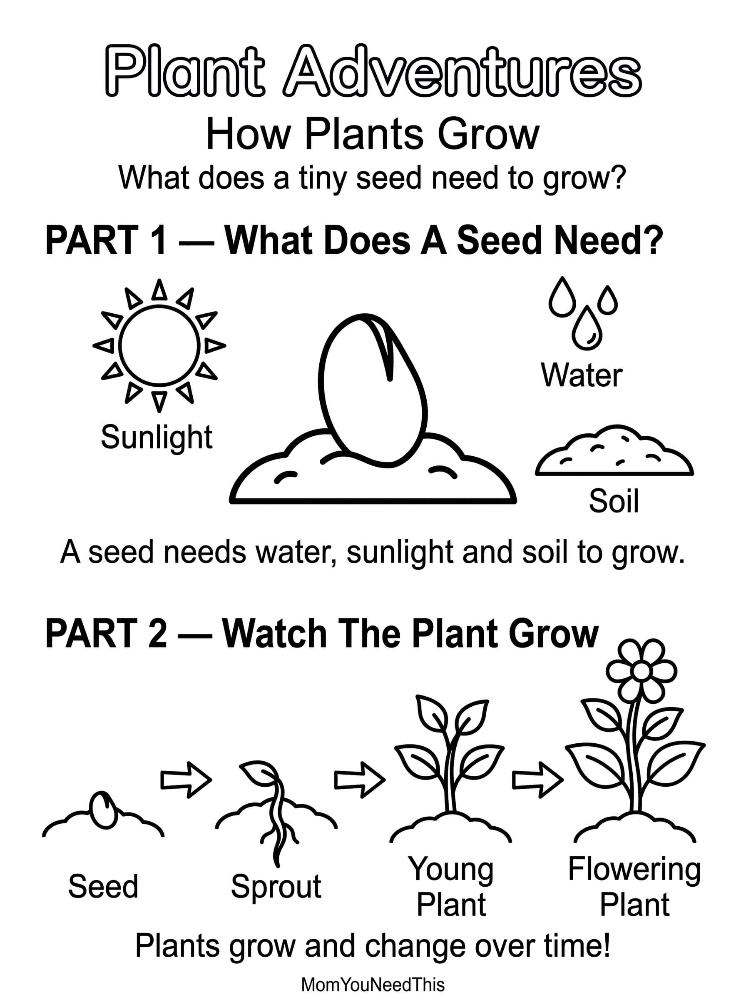

How Plants Grow Free Printable Plant Life Cycle Chart For Kids
Help toddlers and preschoolers discover how plants grow with this fun, kid-friendly plant life cycle printable. Learn how a tiny seed grows into a plant and explore the different stages of plant growth.
🌱 Discover How Plants Grow
Use the printable to help your child learn about seeds, roots, stems, leaves, flowers, and the different stages of a plant's life cycle.
Free How Plants Grow Printable


How To Use This Printable
Talk about each stage of the plant life cycle and point out what happens as a seed begins to grow. Ask your child questions like "What does a seed need to grow?" or "What happens after a seed sprouts?" You can also use the printable for preschool lessons, nature activities, gardening projects, or quiet learning time.
Why Learn How Plants Grow?
Learning about how plants grow helps children understand nature and introduces early science concepts in a fun and age-appropriate way. It also builds vocabulary, observation skills, and curiosity about the natural world.
🎁 Keep Exploring Free Learning Activities
Discover more printable activities, toddler resources, and learning ideas created for busy parents.
🎁 View All Free Resources